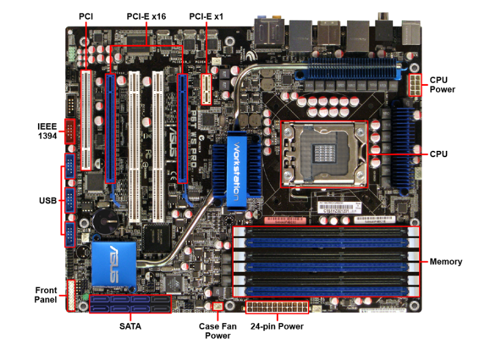

Components
Motherboard
Introduction
A motherboard (also called system board, logic board, or mainboard) is a circuit board that either houses, or connects to, all components operating in the computer.
Motherboard Specs
When selecting a motherboard, consider the following motherboard specifications.
- Central Processing Unit (CPU) socket type
- Memory module compatibility
- Number of memory slots
- Maximum supported memory
- Expansion slot count and type
- Onboard devices (video, audio, or network)
Typical Components
A typical motherboard includes the following components.
CPU socket
The CPU socket houses the CPU. There are a variety of CPU socket types. Each have unique shapes, pin arrangements, or mounting configurations.
- Different types of motherboard sockets exist to fit different generations of CPUs. It's important that the socket is compatible with the new CPU's mounting holes and pin array.
- You may be able to determine the type of socket on a motherboard by looking at the computer's model number and then using the manufacture's web site to locate the CPU socket type.
- Some motherboards are manufactured with multisocket processing capability and may support dual or quad-socket processing in the CPU.
- Server motherboards used for cloud computing are multisocket processors with gigantic memory capacity. They:
- Can act as the hub for running many computers.
- Can handle massive amounts of data simultaneously.
- Are robust enough to support a storage area network (SAN) environment.
Memory Slots
Most motherboards have multiple slots to add memory cards. Memory slots are compatible with a specific type of memory module. Always refer to the motherboard documentation.
Peripheral Component Interconnect (PCI)
PCI slots are often called expansion slots or expansion buses. They allow you to add cards to expand the capabilities of a computer by installing expansion cards. There are from one to six PCI slots available on a motherboard. There are a number of expansion slot types, including:
- PCI
- PCI-X (PCI Extended)
- PCIe (PCI Express)
- Accelerated Graphics Port (AGP)
Integrated components
Many motherboards include integrated (onboard) components such as network cards, audio cards, and video cards. They can also include USB and FireWire connections.
Selecting a motherboard with integrated devices is typically cheaper than buying separate expansion cards for each feature. However, the quality of these onboard devices might not be as high as dedicated expansion cards.
I/O Connectors
I/O connectors for onboard components are located on the back of the motherboard. These connectors typically include:
- PS/2 mouse and keyboard ports
- USB ports
- Serial ports (COM 1, 2, 3, and 4)
- Parallel port
- Audio jacks
- Ethernet port
Internal Connectors
The motherboard has internal connectors so that components (such as case fans, LED lights, CPU power, etc.) can be plugged in. A motherboard can have a header (a rectangular-shaped connector with male pins) for any component that allows an external connection (e.g., audio header, network header, serial port header, USB header, etc.).
- The motherboard connects to the front panel ports (e.g., USB, FireWire, or audio ports) of the computer case via the front panel header connectors.
- The main power connector usually attaches to the motherboard using a 20- or 24-pin connector to generate power to all its components. Newer models have additional 4 and 8-pin connectors to supply more power.
- External connectors to the motherboard are not available except by adding expansion cards.
- external SATA (eSATA) uses an expansion card to provide an external variant of the SATA known as Serial Advanced Technology Attachment solid-state drive (SSD).
- M.2, formerly known as Next Generation Form Factor (NGFF), can integrate multiple functions (including SSD) as a faster option than SATA.
- Always verify a motherboard's compatibility by referring to the documentation to make sure the M.2 module works with the socket.
Firmware
The firmware on a motherboard is stored on integrated flash memory. Motherboards use one of two firmware implementations:
- BIOS (Basic Input/Output System
- FI (Unified Extensible Firmware Interface)
CMOS Battery
The CMOS battery keeps the accurate date and time, even when the motherboard has no power. In older motherboards, the CMOS battery also retained BIOS configuration settings, which were stored in volatile memory called the CMOS chip.
Chipset
The chipset is a group of chips that facilitates communication between the processor, memory, and peripheral devices.
With chipsets:
- The memory controller and graphics controller are on the CPU.
- The remaining functionality is combined into a single controller chip.
- Intel processors use the Platform Controller Hub (PCH).
- AMD processors use the Fusion Controller Hub (FCH).
- A Direct Media Interface (DMI) replaces the front-side bus.
Motherboard documentation & support manual
A motherboard's support manual is an excellent source of information. Support manuals contain technical specifications as well as diagrams that identify the motherboard's components.
To ensure compatibility, always check the motherboard documentation whenever you are upgrading, customizing, or replacing components. If you don't have the motherboard support manual, check the manufacturer's website.